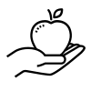

What is the OneRNG?
The OneRNG is an Open Hardware, Open Source, simple and verifiable USB-connected source of entropy; we do not ask you to "trust" us, we give you the ability to verify for yourself that the OneRNG does what we claim, and that it does nothing else.


 Kickstarter Campaign
Kickstarter Campaign
We are currently running a campaign on Kickstarter to fund construction of OneRNG.
Please head over there and help to secure the future of this design!
You rely on a high-quality source of random numbers to maintain your privacy and security in computer communication; but computers have too few sources of truly random data for the demands we place upon them. Increasingly we have been distrusting the solutions given to us by others, as they are shown to be weak in so many ways - because of faults in implementation, in design, or due to subversion by attackers who simply do not care about the consequences of their actions (I'm looking at you, NSA).
In general usage, we recommend that you use the OneRNG as an entropy source for your operating system's own RNG software; this allows you to consume extremely large quantities of random data without either blocking or reducing the quality of the data.
Verifiable?
- The OneRNG is Open Hardware - you can get the full hardware schematics, you can build your own. You can see the full details of every component that has been used. You can visually check every component on the boards that we supply.
- The OneRNG is Open Source Software - you can see how the firmware is written, you can modify it and use your own version if you prefer (although you'll need a separate programmer unit, also Open Hardware of course)
- The OneRNG is verifiable - you can prove that it does exactly what you expect, and nothing else. You can ask it to dump the current firmware to you, you can see all the components on the board.
- The OneRNG is fail-safe reliable - if it detects instability in the entropy generators, it will stop delivering data and blink the status LEDs.
- The OneRNG is safe to attach to your systems. Because you can only modify the firmware over a dedicated connection on the board, it cannot be subverted over USB, and it will not attack you over USB.
 More Information
More Information
In response to an approach and initial design brief from Jim Cheetham, the New Zealand-based engineering company Moonbase Otago/Paul Campbell designed and built the OneRNG.
- Project Roadmap
- Technical Documentation @ Moonbase Otago
- Hardware Designs on Github
- Firmware on Github
- Open What?
- Entropy & Random Numbers
- On Trust
- What's in a name?
Current State
Fundraising on Kickstarter has started, and is progressing strongly.
The more we fund, the more we can build — and the more ideas we get the better the OneRNG can get.
 Discussions
Discussions
Join the OneRNG Talk discussion (sponsored by OnlineGroups.net, thanks!)
Tell us about other approaches to solving these problems, about how we would address your specific use-cases, what features you would like us to consider for future units. If you have built your own unit (whether the OneRNG or any other style of HWRNG) let us know too.
External Reviews, Presentations and Discussions
Let us know about other places where OneRNG has been discussed, and we'll list them here. Even the bad ones! We will of course point out technical inaccuracies, but there's no point in trying to suppress information from the Internet ...
Past:
- Kickstarter campaign, 15 Dec 2014
- Kiwicon 8, 11 Dec 2015. Slides available here.
- The Register, 17 Nov 2014
- DunSec, 11 Nov 2014
- #bitcoin-assets IRC, 28 Oct 2014
- Hacker News, 28 Oct 2014
Future:
- LCA2015, 15 Jan 2015
- Jim Cheetham — Information Security — jim@inode.co.nz
Jim has been in the security field for the last 10 years, and in the unix/network field for over 25 years. Currently working at the University of Otago's Information Security Office.
https://www.linkedin.com/in/jimcheetham - Paul Campbell — Hardware Design — paul@taniwha.com
Paul hasn't said anything pithy about himself yet, but has done chip design and on-board crypto work for many years, creates Open Hardware projects and keeps the Dunedin MakerSpace running.
 Team Members
Team Members
Licences
Open Hardware (as per the definition at http://www.oshwa.org/definition/) for the actual hardware.
Open Source (GPLv3 and LGPLv3 as per the FSF, http://www.gnu.org/licenses/gpl.html and http://www.gnu.org/licenses/lgpl.html for the system firmware and OS utilities.
 Attributions
This website uses icons from The Noun Project http://thenounproject.com. See the img/ directory for the icons and individual licenses.
This website also uses fonts downloaded from Google Fonts (not the versions hosted at Google, in order to preserve your privacy). See the fonts/ directory for details.
The HTML for this website is compiled from less-complex source files, using Template::Toolkit. See the src/ directory for details.
This website is hosted on GitHub Pages.